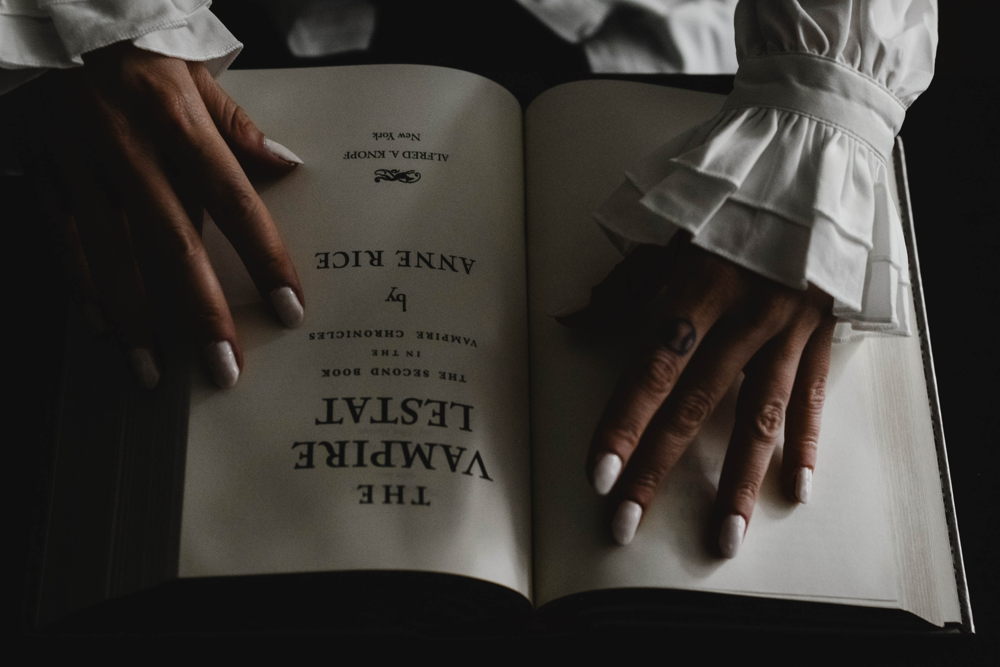
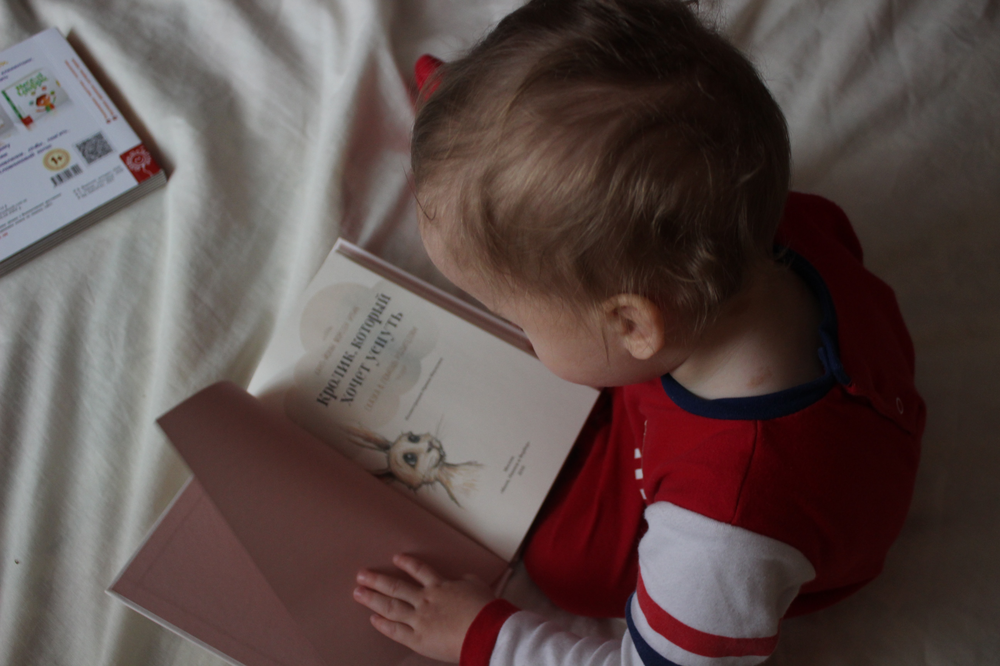

Why we should reading?
This video explains why books should be read more often so that we can improve our language skills and our knowledge of the world, enhance creativity and flexibility, reduce stress, and enhaces empathy.
12 Reasons You Should Read (At Least) 12 Books This Year
-
Reading is good for your brain
“Reading is to the mind what exercise is to the body.” Joseph Addison penned this quote roughly 300 years ago, before modern science and research equipment could back up his claim. Today, however, scientific studies show that reading does make you smarter. Reading a novel, for example, increases the blood flow and improves connectivity in the brain.
-
Reading introduces you to new ideas and invites you to solve problems
Have you ever solved a case in a mystery book before you read the conclusion or predicted a turn of events in a novel? Your analytical thinking was stimulated merely from reading. Reading helps you detect patterns, solve problems, and assimilate new information as if you were living in the characters’ shoes.
-
Reading makes you a better writer
When you read, your brain absorbs good writing techniques and vocabulary. In your own writing, you will unconsciously copy the writing styles of books that held your attention. Reading also enhances your vocabulary and spelling. New words appear in their natural context and you can deduce meaning from the surrounding words, while visually imprinting their spelling for accurate recall.

-
Reading improves your conversational skills
Because reading increases your vocabulary and your knowledge of how to correctly use new words, reading helps you clearly articulate what you want to say. The knowledge you gain from reading also gives you lots to talk about with others. I love talking to people - especially little kids - who read a lot. Their conversation tends to be deep, and it makes me grin when little ones use fancy words they found in a book.

-
Reading strengthens worldview and convictions
When you read a book with a concurring worldview, it reinforces your convictions. If you read a book with an opposing worldview, it broadens your perspective and causes you to examine your beliefs and search for truth.
-
Reading improves your self-discipline and consistency
With the modern barrage of media and instant technological information, our attention spans are getting shorter and shorter. Reading a book, unlike skimming a web page, forces you to focus. To get the most out of a story, you must fixate on the plot and complete the book. In doing this, your brain forms deep connections and practices concentration.
-
Reading increases your knowledge of history
Reading can teach you historical politics, customs, cultures, economics, and intellect. Often these facts are set in a context of a story, making history easy to remember. When I was in middle school, history was not my favorite subject. The dates and events didn’t capture my attention when they came from a history book. Historical fiction, however, was a different matter. I loved reading about the past in story form, and I effortlessly learned historical facts and concepts while reading. I appreciate and understand the people and cultures of the past so much more than if I’d read only factual history books.

-
Reading increases cultural knowledge (without an expensive plane flight)
Reading books set in cultures different from our own provides knowledge of those cultures and the emotional and spiritual lives of the people who live there. I hope to travel the world someday, but until then I’m exploring through books. I’ve gained a deeper understanding of cultures through reading: stories of hammock beds, cannibals, burqas, and Uganda’s red dirt stand out stark in my brain. I’ve not yet been to these cultures, but I understand them better because of reading.

-
Reading challenges your imagination
As you read, you put yourself in the characters’ shoes. Your brain goes beyond the words on the page, imagining details such as appearances, emotions, and surroundings. William Styron wrote, “A great book should leave you with many experiences, and slightly exhausted at the end. You live several lives while reading.”
 -
Reading increases your skill in an area of interest
Reading about your specific field or interests can improve your success in your field. You’ll gain factual knowledge and learn from others’ experiments and mistakes. Several years ago I became interested in herbs and natural medicine and turned to books since I didn’t have an herb garden. For months I pored over herb books, drinking in knowledge. When I was able to g my own herbs, I avoided multiple experiments and failures because of my reading. I knew that peppermint is good for upset stomachs and comfrey heals cuts. So I made tea with my peppermint and a salve with the comfrey.
-
Reading inspires you
Reading a good book is like being around an inspiring person. You observe inspiring actions, feel contagious passion, and desire to live a better life.
-
Reading reduces stress
Reading about something you enjoy or losing yourself in a good novel is an excellent way to relax. It can ease tension in your muscles and heart while letting your brain wander to new ideas and live in someone else’s shoes. Reading is a mini vacation for your brain!
